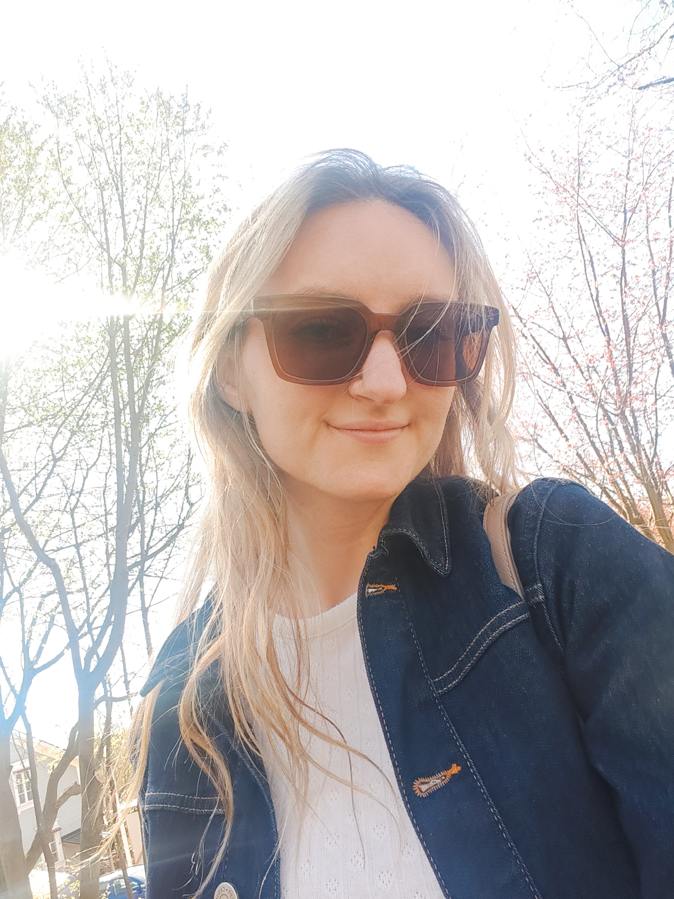

En kort presentation om mig

Jag heter Maáyan och fyller snart 33. De senaste åren har jag haft många intressen, bland annat cirkusträning, dans, fotografering, fixa naglar och att resa. Men en hobby som har cirkulerat genom hela livet är att spela spel. Så därför tänkte jag lista några av mina favoritspel här.
Mina tidigare erfarenheter av IT
Jag sökte faktiskt den här utbildningen för ca 10 år sedan och kom in som resverv, men tackade nej då jag inte kände mig redo för att plugga. Några år senare blev jag rekryterad till en yrkesutbildning inom Cobol istället där jag studerade intensivt på heltid i ca fyra månader. Efter utbildningen exploderade AI och utbildningen ledde inte till något jobb just då. Istället fick jag som tillgänglig konsult testa Java och grundläggande webbutveckling på egen hand. Jag kände då att efter att ha klarat av Cobol, så klarar jag av vad som helst.